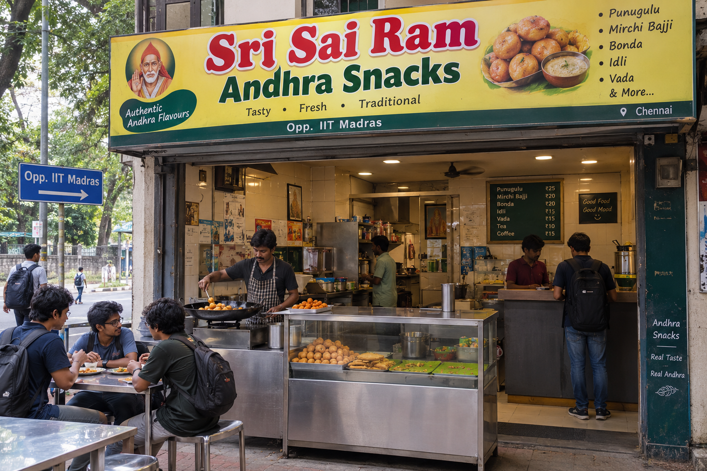

We bring the vibrant, bold, and fiery flavors of Andhra Pradesh straight to your plate.
Whether you are craving the perfect crunch of golden Punugulu with spicy ginger chutney, or the fiery kick of stuffed Mirchi Bajji, we have got your cravings covered.
Every snack we make is prepared fresh, packed with authentic spices, and served piping hot—just the way it is done on the bustling streets of Vijayawada and Vizag.
Explore Our Menu

At Sri Sai Ram Andhra Snacks, we are passionate about bringing the authentic taste of andhra pardesh to your table. And the best part? We deliver right to your doorstep! Whether you're craving a quick snack or planning a feast, our delivery service ensures that you can enjoy our delicious offerings without leaving the comfort of your home.